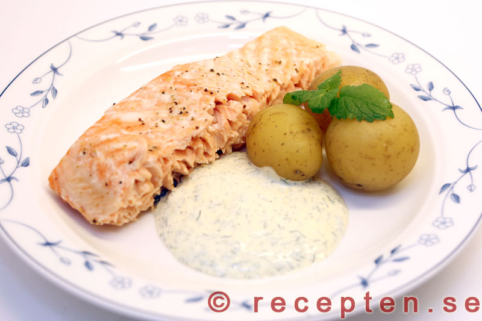

Lax med potatis och dillsås
Recept
En god klassiker! Saftigt grillad lax, med kokt potatis och en härlig kall dillsås
Du behöver:
- 4 laxbitar
- 8-10 potatisar (2-3 per lax)
- Salt, peppar och citronpeppar
- 1 dl dill (fryst funkar)
- 3 dl gräddfil
- 4 matskedar majonnäs
Steps
- Blanda gräddfil, majonnäs och dill tillsammans i en skål och låt stå i kylen
- Koka potatisen i 20-25 minuter
- Krydda laxen med salt, peppar och citronpeppar
- Tillaga laxen i Airfryer 10 minueter på 180 grader
- Servera med dillsås!